「當責」——對自己負責的工作扛起完全責任——是工程師最重要、也最教不動的素養。課堂上講一百次「你們要負責」，學生點頭，然後繼續交差了事。這個研究用一整個學期、112 位大二學生、九個資料集，去回答這個問題。
「老師的責任，是打造合適的情境，
讓學生對自己的學習負責。」
先說清楚「當責」和「負責」差在哪。負責（Responsibility）是把分內的事做完；當責（Accountability）是對最後的結果扛起來——包括主動檢查自己做得對不對、發現錯了承認並修正、在沒有人盯著的時候依然不放水。
工程這一行，當責就是人命。施工日誌上的每個數字都有法律效力，查核表上的每個簽名都是專業背書。但翻開任何一本教科書，「當責」都只是一個名詞解釋——因為它不是知識，是素養。素養沒辦法用聽講學會，就像沒辦法用看影片學會游泳。
如果講不會，那就讓學生「進去」——進到一個做的每件事都有後果感的情境裡。
這就是本研究的賭注：與其在教室裡「講」當責，不如打造一個足夠真實的工程情境——真實的工程案例、真實上線的管理系統、有法律重量的任務——然後退後一步，看當責會不會自己長出來。而且，全程用資料記錄它長出來（或沒長出來）的樣子。
| 研究問題 | 白話版 |
|---|---|
| P1 真實工程情境＋當責任務設計，能否建立責任意識與應用能力？ | 把學生放進真實情境、給他有重量的任務，他會不會「當一回事」？ |
| P2 整合當責提醒的 AI 學習助理，能否提升自主管理與任務完成度？ | 24 小時待命的 AI 助教，能不能幫學生自己把學習扛起來？ |
| P3 整合教學模式對知識、能力、當責行為與專業認同的影響？ | 這一整套下來，學生的腦（知識）、手（能力）、心（態度認同）有沒有變？ |
「老師的責任，是打造合適的情境。」這一章就是老師做的全部工作——四層情境，一層一層搭起來。理論根據是情境式學習（Situated Learning; Brown et al., 1989; Lave & Wenger, 1991）：知識只活在它的應用情境裡，脫離情境的知識是「抽象符號的遊戲」。
情境的真實感來自資料的真實性。學生拿到的不是課本習題，而是一條真實工程的完整檔案：真實的契約工項與標單（數量、單價、總價）、真實的 WBS 與公司內部甘特圖、真實的歷史施工日誌與監造報表。這些資料帶著真實世界的「不完美」——營造廠甘特圖的工項名稱跟契約對不起來、監造報表是簡略過的二手資訊——而這些不完美正是教材：學生必須自己把它們對起來，就像真的工程師每天在做的事。
EAGLE 是計畫主持人與工程顧問公司產學合作開發、實際上線用於真實工程的專案管理資訊系統。學生用瀏覽器登入為課程建置的 EAGLE-LMS，扮演承包商現場工程師：填日誌、算進度、做查核。每一筆輸入、每一次提交、每一次檢核都留下時間戳——這既是工作場景，也是研究的攝影機。
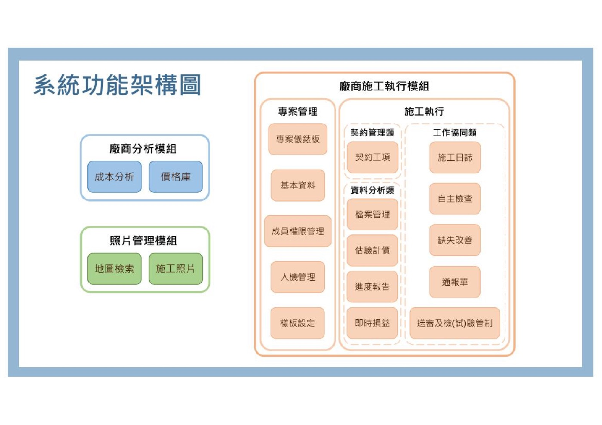
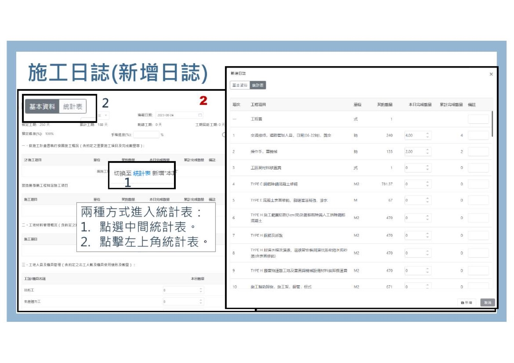
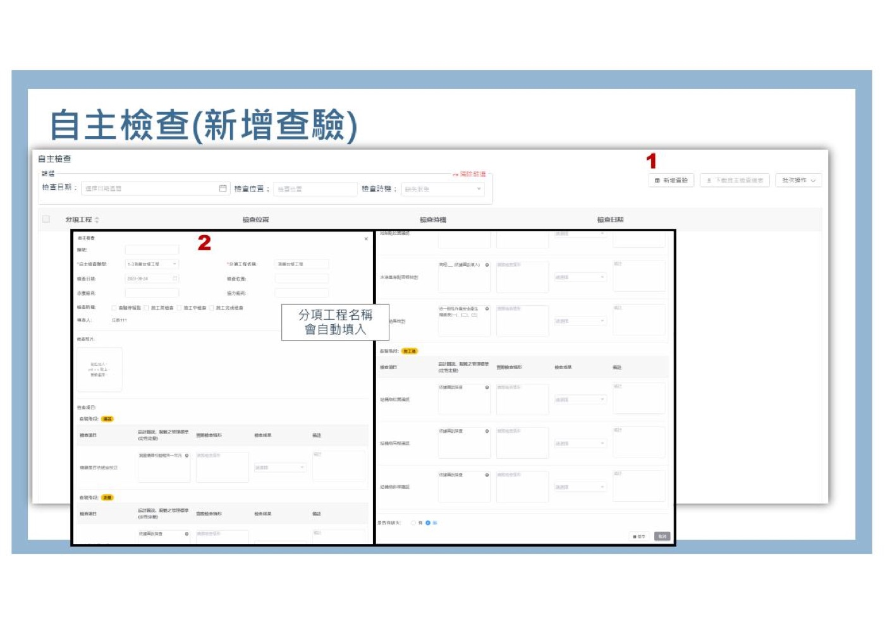
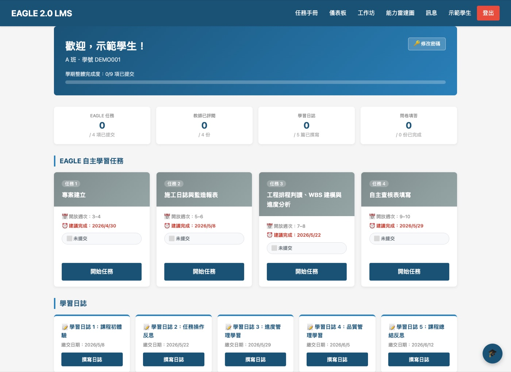
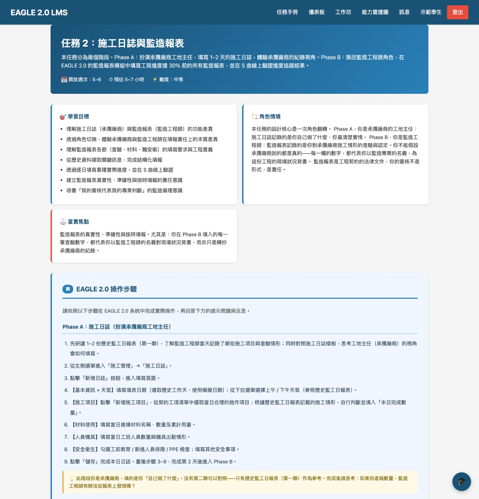
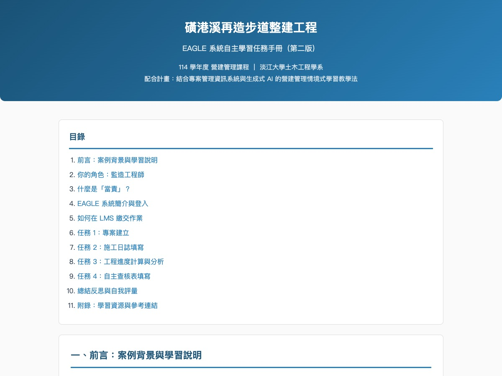
每個任務配有客製化 AI 助教（以課程知識庫約束），提供 24/7 提問管道與當責提醒；每份提交由 AI 先預批、教師再確認——教師評閱行為全程留痕（這後來變成一個意外的研究發現，見「有希望的未來」）。
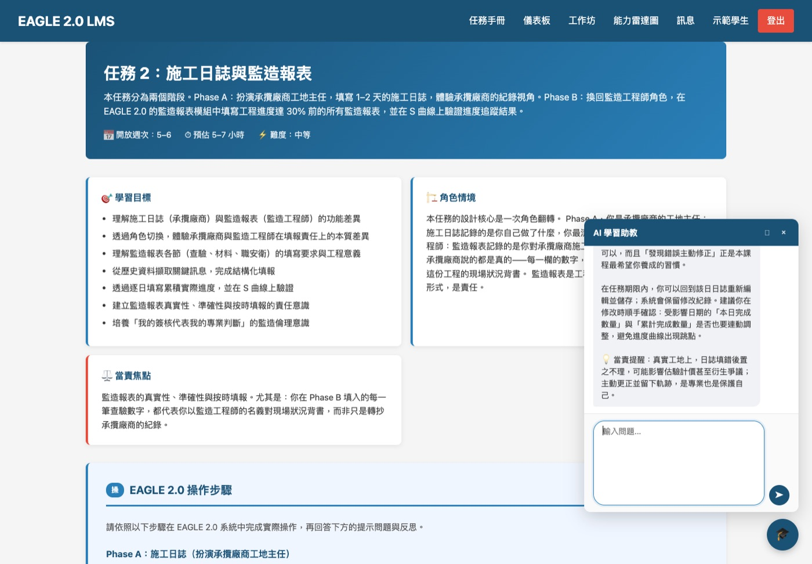
下面是可以操作的演練面板——切換兩個助教、點範例問題或自己輸入，體驗學生在系統裡得到的回答風格（含每則末尾的當責提醒）。
面板直連課程的 ai-tutor 服務——回答由真實課程知識庫（RAG）即時生成，與學生使用的是同一顆大腦（公開演示為單輪問答，每小時 10 題；離線或超量時自動切換預錄演練）。完整多輪對話請登入： 🦅 EAGLE 2.0 LMS（課程平台） 📊 EAGLE 工地儀表板
| 機制 | 學生實際經歷的事 |
|---|---|
| ① 責任聲明 | 動工前先簽「工程日誌填報責任聲明」——先知道這張表在契約裡的法律地位，再開始填 |
| ② 自我檢核 | 交出去之前，用檢核表逐項確認欄位完整、進度算對——「檢查自己」是任務的一部分 |
| ③ 交叉審查 | 各組互審對方的日誌，模擬真實的監造審查——要負責任地提出審查意見 |
| ④ 時限交付 | 規定時間內交付——工地不等人 |
| ⑤ 反思日誌 | 五篇日誌記錄困難、突破與當責反思，期末含口頭報告自評 |
| ⑥ 直面後果的提問 | 任務手冊直接問：「施工日誌有什麼法律效力？」「不實填報會造成什麼後果？」 |
課本上的名詞第一次有了畫面——他們日後在系統裡填的每一筆日誌、算的每一段進度，都對應著腳下這條真實的溪。
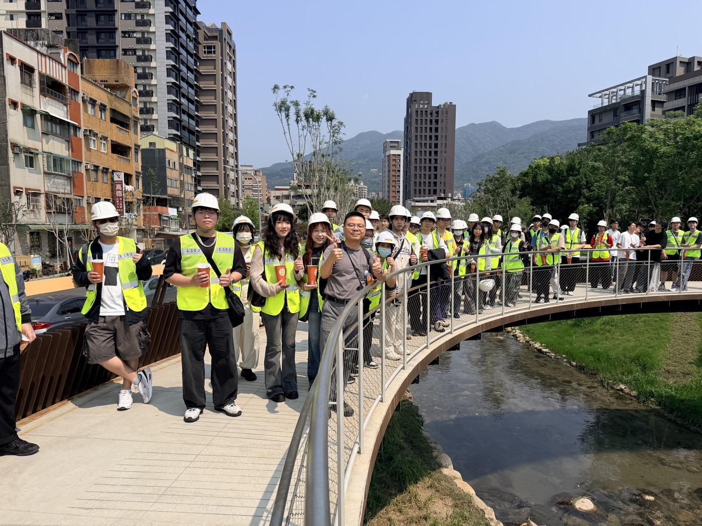
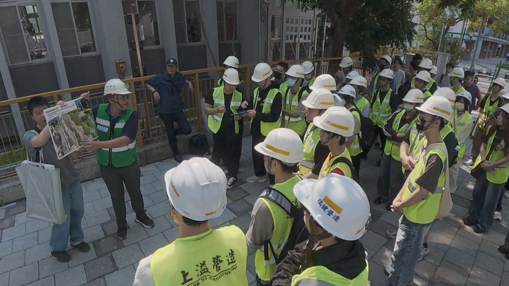
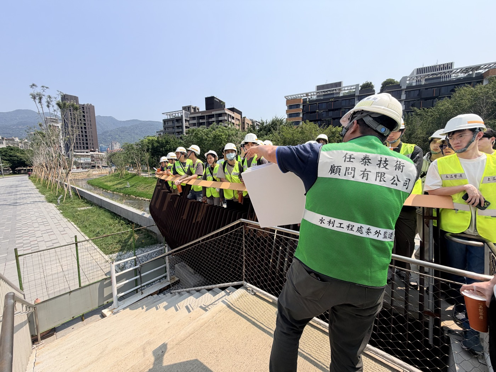
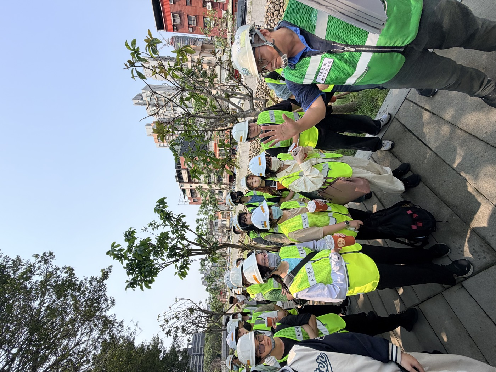
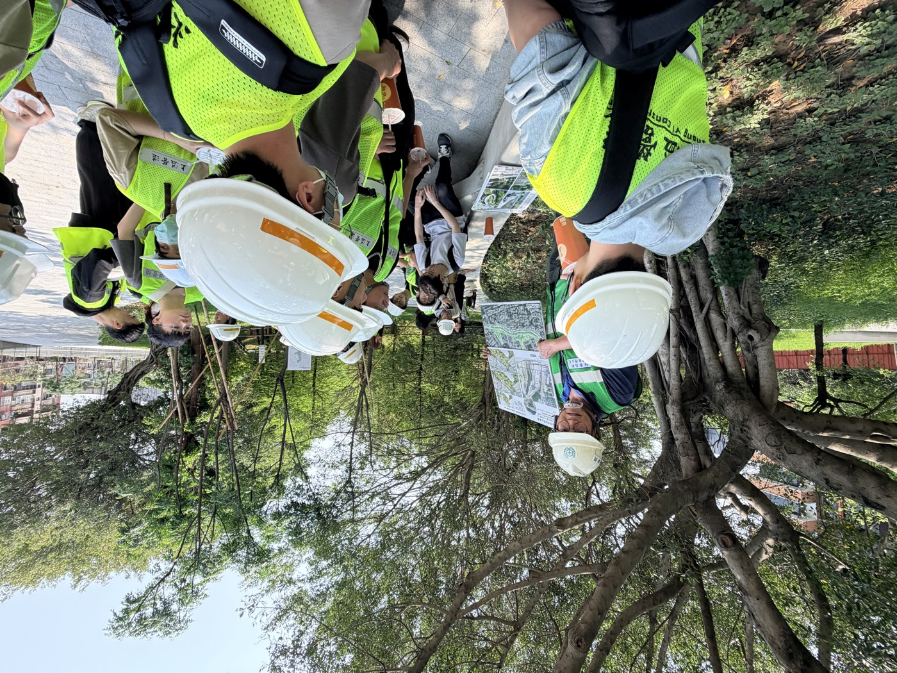
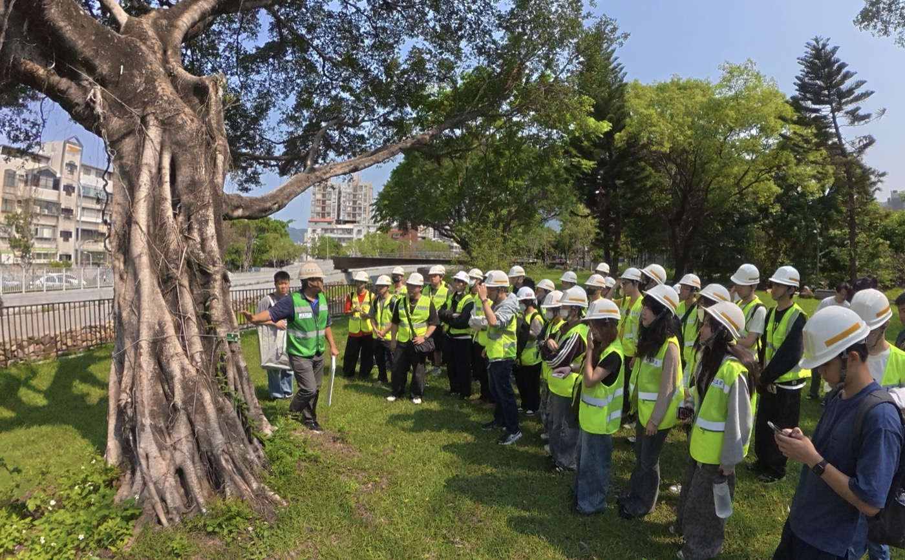
| 任務 | 學生實際在做的事 | 當責考驗 | 提交 |
|---|---|---|---|
| 1 專案建立 | 把契約工項匯入系統、建 S 曲線——第一次發現「原來一條步道有幾百個工項」 | 資料建置的完整性 | 68 份 |
| 2 施工日誌 | 對著簡略的歷史監造報表，一天一天反推：今天做了哪些工項？進度幾 %？然後填進系統，讓實際進度曲線長出來 | 每個數字都要有依據 | 52 份 |
| 3 進度分析 | 甘特圖×契約對應、CPM 前推後推、EVM 實獲值——全課程最硬的一關 | 算不出來，放棄還是堅持？ | 31 份 |
| 4 自主查核 | 依三級品管制度填自主查核表——在「查核人」欄位簽下自己的名字 | 簽名 = 專業背書 | 36 份 |
他們留下的足跡，構成本研究的九個資料集——本頁每個數字都可回溯至原始檔（原始資料含學生個資，已去識別化管理，於內部審查版提供）：
| 資料集 | 規模 | 它記錄了學生的什麼 | 原始檔 |
|---|---|---|---|
| 任務提交與評分明細 | 187 份 | 做了什麼、做得怎麼樣（含逐題回答與教師評分） | task1task2task3task4 |
| ARCSA 動機量表前後測 | 90 人配對 | 學期頭尾，學習的心態變了多少 | arcsa_paired.csv |
| 活動重要性×滿意度問卷 | 61 人 | 覺得哪些活動值得、哪些活動卡 | satisfaction.csv |
| 學習日誌全文 | 244 篇 | 五個時間點的真心話 | journals.csv |
| 日誌質化編碼 | 244 筆 | 當責行為在文字中出現的軌跡 | 日誌編碼結果.csv |
| 正式成績（整備後主表） | 145 人×47 欄 | 筆試學得如何（九源合併・含資料字典） | 主分析資料表.xlsx.csv |
| 總結工作坊 ORID 逐字稿 | 2 場 4 小時・77 人 | 整學期的集體證詞 | A 場分析B 場分析 |
| 素養 rubric・口頭評分・AI 紀錄 | 13 人完整＋187 筆 | 素養軸的直接測量＋教師評閱行為 | research_bundle.zip |
| 名冊與資料完整性 | 112 人 | 樣本流向與分組 | data_check.csv |
一句話說完研究設計：比較「走進情境的學生」和「沒走進去的學生」，從三個角度看差異——成績（腦）、動機（心）、行為（手）——而且三個角度要互相對得起來才算數（三角驗證）。
| 方法 | 它在回答什麼（白話） | 技術設定 |
|---|---|---|
| 獨立樣本 t 檢定 | 「參加的學生，成績真的比較好嗎？還是只是運氣？」 | Welch t；效果量 Cohen's d |
| ANCOVA 共變數分析 | 「會不會只是因為參加的人本來就比較認真？——把『認真程度』扣掉再比一次」 | 成績 = β₀+β₁組別+β₂投入度+ε |
| 劑量反應分析 | 「像藥一樣：劑量越高效果越好，才更像真的有效。做 1 個任務、2 個、3 個、4 個的人，成績有沒有跟著階梯上升？」 | 成績 = β₀+β₁任務數+β₂投入度+ε |
| 敏感度分析 | 「把 18 個早就放棄修課的零分學生拿掉，結果還站得住嗎？」 | 排除最終成績=0 者重跑全部檢定 |
| 成對樣本 t 檢定 | 「同一個學生，學期頭尾的學習心態變了多少？」 | 前後測配對；效果量 dz |
| IPA 四象限分析 | 「哪些活動學生覺得『重要但體驗不好』？那就是最該優先修的地方」 | Martilla & James (1977) |
| 日誌質化編碼 | 「當責如果真的長出來，會出現在學生自己寫的文字裡——我們逐篇去數」 | EP1–EP4 二元編碼・從嚴準則（空話不算） |
| ORID 焦點討論分析 | 「期末面對面問：你實際做了什麼？卡在哪？怎麼突破？以後會怎麼做？」 | 2 場逐字稿主題分析・77 人發言 |
| 檢驗 | 結果 | p 值 | 通過？ |
|---|---|---|---|
| 組間比較（86 vs 20 人） | 69.7 vs 60.1，d = 0.73 | .012 | ✓ |
| 排除棄修者後：一期中／二期中／期末 | d = 0.66 / 0.50 / 0.70 | .002 / .038 / .006 | ✓✓✓ |
| ANCOVA 控制投入度 | 實驗組 +8.56 分 | .006 | ✓ |
| 劑量反應（n=107） | 每任務 +1.70 分；r = .296 | .025 / .002 | ✓ |
四道檢驗、方向一致、全部顯著。底表：主分析資料表.xlsx・詳細：統計分析結果報告
「之前其他課程可能就是草草帶過，但這堂課在做的時候，我會自發地去找答案。」
總結工作坊 A 場——成績差異背後的行為差異，學生自己說出來了動機增益與成績呈微弱負相關（r = −.27, p = .058）。原因幾乎可以確定是天花板效應：會填問卷的學生前測就已經 4.17／5——本來就想學的人，量表上沒有空間再漲了。白話說：量表問不出來的，不代表沒發生；這正是為什麼本研究同時收行為與文字證據。
這是整個研究最重要的一章。我們把 54 位學生的 244 篇學習日誌逐篇分析：每一篇有沒有出現「當責行為」——不是喊口號的「責任很重要」（那不算分），而是具體的行為描述：我檢查了自己的數據、我發現錯了回去改、我對我簽的名字負責。
把第 3 週和第 16 週的日誌並排讀，會發現一件編碼表格看不到的事——主詞變了。學期初，學生用「他們」談責任（監造工程師是守門員）；學期末，主詞變成「我」（我一定會強迫自己二次檢查）。當責從一個「別人的職業描述」，內化成「自己的行為準則」：
「監造工程師更像是工程質量的守門員。」
「監造就是不能放水，必須頂住廠商想趕工的壓力和人情。」
「是一個承載高度專業與法律責任的職業。」
「監造工程師就像穿著工程鞋的法官兼拆彈專家。」
當責是別人的事——一種職業的描述「寫完一份資料後，我一定會強迫自己進行二次檢查。」
「可能有其他的作業也要做，那我也必須自動自發地完成。」
「我做的怎麼樣、我有沒有確實做到——這類的反思。」
「自己筆下的每個數據、每天簽認的報表背後，都背負著極高的專業和法律責任。」
當責是我的事——一種自己的行為準則沒有人要求學生背定義。但期末日誌裡，他們寫出了教科書寫不出來的版本：
「『當責』是明知有灰色地帶，仍選擇堅守專業底線並對最終結果負責。」
期末日誌「真正的當責是要確保資料是正確、合理的，不能只是完成填報。」
期末日誌——「做完」與「做對」的區別，他自己說出來了「虛報或盲目套用公式只會讓決策失真，誠實面對數據才是對專案負責。」
期末日誌「簽的每個名、算的每個進度趴數，背後都是沉甸甸的公共安全。」
期末日誌「當責是對工程現況與數據負起零容忍的專業判斷責任。」
期末日誌「監造工程師的當責，刻進了我們整個工程的骨子裡。」
期末日誌成長曲線不是一路順風。工作坊逐字稿記錄了完整的過程——先卡住，再突破，然後長出東西：
「你給的工項和上面要輸的工項就是很不一樣，所以要一個一個找。」
工作坊 B 場——真實資料的「不完美」正是最大卡點「要看每一天的監造報表……一開始就要先猜那個工項。」
工作坊 B 場「一直去找資料，左邊對資料，然後填上去，很花時間。」
工作坊 A 場「我會一直質疑自己到底做得有沒有完整？做起來感覺就怪怪的，可是好像又沒什麼問題。」
工作坊 A 場——自我懷疑本身就是自我檢核的開始「就會開始很緊張，然後就很焦慮，然後不知道怎麼辦。」
工作坊 B 場——誠實的挫折，也是資料的一部分「雖然這樣直接實作的方式很讓人感到挫折，不然就是做到想放棄。」
學習日誌 J2「有很多名詞不知道是做什麼的，我就要先一個一個去查……總共用了一個禮拜。」
工作坊 A 場——完成全部任務的學生「我才會熬夜通宵去把它完成……就是不甘心去放棄啊。」
工作坊 A 場——「不甘心放棄」，這就是動機內化的聲音「直接把老師貼的解釋丟給 AI……一邊看 AI 教我怎麼去做。」
工作坊 B 場——AI 當家教「跟很多的 AI 對比……看哪個講的一直都是一樣的。」
工作坊 B 場——自發的多模型交叉驗證「我會再點進去那個資料來源去看……再上網查是不是真的有這個東西。」
工作坊 B 場——自發的來源查證「問了應該有十來次的 AI，可是每一次工期都沒辦法閉合（最後自己手算）。」
工作坊 B 場——AI 失靈時，人把責任接回來「一步一步算出來，用 Excel 算出來……這一整個是比較有成就感的。」
工作坊 B 場——最卡的地方＝最有成就感的地方「翻蠻多檔案……覺得很不耐煩」→「一步一步把它們全部找出來，其實有成就感。」
工作坊 B 場——同一個學生，前後兩句話「只有親自動手除錯，才能真正掌握工程管理的精髓。」
學習日誌 J2「才會發現自己知識的盲點，並在修正中建立真正的專業實務感。」
學習日誌 J2「下意識當作業做；真實工地要負責，就要把每個東西做到好。」
工作坊 B 場（學生主動問）「如果填錯資料，要負什麼法律責任？」
工作坊 B 場——教師當場點名：這個問題本身，就是當責所有引文均為學生原話（去識別化）。完整逐字稿分析：A 場B 場・全部 244 筆日誌編碼：日誌編碼結果.csv
「打造合適的情境」是老師的責任——所以情境沒接住的學生，是老師要修的功課，不是學生的錯。資料誠實記錄了他們。
有一整組學生因帳號申請流程未通過而完全沒進到情境——參與漏斗最前端的損耗發生在行政流程，不在學習動機。「我那個帳號，你還沒幫我審核通過。」（工作坊 A 場）
提交數 68 → 52 → 31 → 36，草稿放棄率 22.5%（其他任務僅 7–12%）。任務 3 要學生從專案文件反推 WBS、自行排程、再對回實際進度——是四個任務中唯一幾乎脫離 EAGLE 系統操作、只剩文字資料的任務。「進度計算是我第一次接觸，不知道要怎麼下手。」（工作坊 A 場）
一位重修生自述不敢求助、「反正只有 20 分」；一位學生五篇日誌皆簡短空泛。情境對高動機者是舞台，對低效能感者可能是另一種壓力——需要不同的鷹架。
有學生家中沒有電腦，只能用手機做系統任務。情境的入場券，不是每個人都拿得到。
拆成階段、加 CPM 示例鷹架、排程工作坊對準第 7 週；同步修帳號審核流程與儲存 bug。
證據：漏斗斷點・IPA 第Ⅳ象限・工作坊回饋
學生大量用自帶 AI、很少用內建助教（日誌僅 3% 提及）。重新設計入口與任務整合，把「怎麼驗證 AI」納入正式教學。
證據：日誌主題統計・工作坊 AI 光譜
口頭報告加「結構」鷹架（四向度最弱：2.38/4）；設計「自評 vs 師評」對照反思——自評比師評高 0.4，看準自己正是當責的前提。
證據：DP5 評分・日誌自評比較
研究限制（完整版見統計報告）：自願參與的自我選擇偏誤（以 ANCOVA＋劑量反應緩解）；對照組動機量表配對僅 4 人；量表天花板效應；各期日誌題引不同；質化編碼採 AI 輔助＋統一編碼簿（建議抽樣人工複核）；模擬情境的當責上限——「模擬時卡住會先放著；真實工地要負責，就會傾盡一切找到答案。」（工作坊 A 場）這句學生的話，就是模擬情境的邊界線。
可以。但不是用「教」的，是用「長」的。
條件是：一個夠真實的情境。
| 如果當責真的長出來了，我們應該看到…… | 看到了嗎 | 證據 |
|---|---|---|
| 學生在沒人強迫下選擇承擔（任務自願、只佔 20%） | ✓ | 80% 自願投入，30 人走完全程；日誌篇幅逆勢成長 +23% |
| 學到的東西留在腦子裡（不是交差） | ✓ | 筆試四道檢驗全過；每多做一個任務 +1.7 分 |
| 心態改變：覺得學習跟自己的未來有關 | ✓ | ARCSA「相關」構面 dz = 0.61，五構面中最大 |
| 行為改變：自我檢核、承認錯誤、對數據負責 | ✓ | 日誌當責行為 13% → 96%；「人稱」從他們變成我 |
| 內化成自己的語言與準則 | ✓ | 期末日誌自發寫出當責定義：「明知有灰色地帶，仍堅守專業底線」 |
| 延伸到未來的行動意圖 | ✓ | 「以後當監造，每天到現場考察」「不確定不能擱著」 |
| 所有人都被接住 | ✗ | 帳號斷點、任務 3 斷崖、低效能感個案——情境還要再修（第七章） |
「有希望」不是客套話。這學期的資料裡，藏著幾個關於「這一代學生可培養性」的具體證據——他們不是不想學，是在等一個值得投入的情境。
只佔 20% 的自願任務，80% 的人報名，有人熬夜通宵「不甘心放棄」，日誌越寫越長。投入的開關不是分數，是真實感。
當任務有法律重量（責任聲明、簽名背書），當責行為在 14 週內從 13% 長到 96%，還自發寫出「明知有灰色地帶仍堅守底線」的定義。承擔的能力一直都在，缺的是值得承擔的東西。
沒有人教「AI 素養」課，但學生自發長出多模型比對、追溯來源、回一手資料查證的習慣，AI 失靈時把責任接回自己手上。這一代人與 AI 協作的素養，是可以在專業情境中自然生成的。
（一）把沒接住的學生接住。第七章的修課清單（任務 3 鷹架、帳號流程、AI 助教整合、低效能感學生的差異化支持）直接進入下一輪課程——本研究的迴圈是：情境 → 資料 → 修情境。
（二）人機協作評量的正式研究。本學期系統記錄了 187 對「AI 預批分 vs 教師最終分」：教師只有 3.7% 照單全收、平均下修 5.7 分（保有專業判準），但兩者相關高達 r = .70、AI 起草時教師平均只停留 19 秒——AI 讓 187 份提交全數完成評閱（人力不可能做到），也留下「錨定效應」的問號。下學期將以隨機化設計（先評再看 AI vs 先看 AI 再評）正式檢驗。當 AI 進入教育，「教師的當責」也需要重新設計——這是本研究孵出的第二個研究題。
這門課會給你一個帳號、一條真實的溪、四個不太好做的任務。沒有人逼你做——這是設計，不是漏洞。因為當責的第一步，是自己選擇承擔。
會卡住。學長姐卡過的地方：工項對不起來、進度不知道怎麼算、「做起來感覺怪怪的可是又說不出哪裡有問題」。他們的求生順序是：看手冊 → 問 AI（然後驗證它：多問幾個 AI、追它的來源、回原始資料對）→ 問同學 → 問老師。這也會是你以後在工地的求生順序。
資料說，每多完成一個任務，學期成績平均多 1.7 分。但學長姐留下的話比數字誠實：
「我才會熬夜通宵去把它完成……就是不甘心去放棄啊。」
— 工作坊 A 場「花比較多時間在這邊，所以做完的時候有比較大的成就感。」
— 工作坊 B 場「『當責』是明知有灰色地帶，仍選擇堅守專業底線，並對最終結果負責。」
— 一位走完全程的學長姐，期末日誌工地不會等你準備好。這門課讓你在還來得及犯錯的地方，先把那些錯犯完。
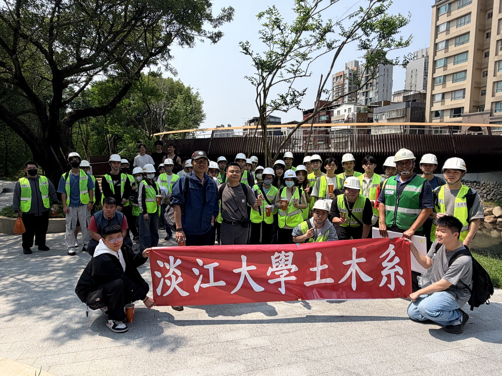
本頁每個數字均可回溯至下列原始資料檔。原始檔含學生學號等個人資料，不隨本頁公開；研究者如需資料合作，請聯繫計畫主持人（淡江大學土木工程學系・蔡明修）。頁面引文均經去識別化。
task1 提交明細 task2 提交明細 task3 提交明細 task4 提交明細 ARCSA 前後測配對 滿意度問卷 學習日誌全文 資料完整性檢查 研究資料完整包
主分析資料表（145×47・含資料字典） 主分析資料表 CSV 日誌質化編碼明細（244 筆） 工作坊 A 場 ORID 分析 工作坊 B 場 ORID 分析
統計分析結果報告（H1–H3・IPA） 質化分析報告（日誌編碼・ORID） AI 錨定與素養軸分析 資料使用規劃 IPA 四象限圖 AI 錨定與任務漏斗圖